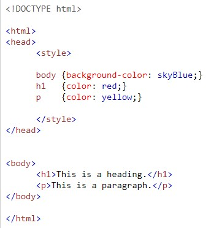
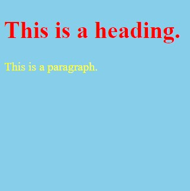

HTML inline CSS
An inline CSS is used to apply a unique style to a single HTML element.
An inline CSS uses the style attribute of an HTML element.
The following example sets the text color of the <h1> element to blue, and the text color of the <p> element to red.
The code for the <h1> element looks like this: <h1 style="color:blue;"> A Blue Heading </h1>
A Blue Heading
The code for the <p> element looks like this: <p style="color:red;"> A red paragraph.</p>
A red paragraph.
HTML internal CSS
An internal CSS is used to define a style for a single HTML page.
An internal CSS is defined in the <head> section of an HTML page, within a <style> element.
The following example sets the text color of ALL the <h1> elements (on that page) to red,
and the text color of ALL the <p> elements to yellow.
In addition, the page will be displayed with a "skyblue" background color.
 